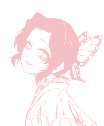

KazaAnaliz
Fotoğraf tabanlı araç kazası hasar tespiti için geliştirilen bitirme projesi.
Python · YOLOv8 · Django · Özel depo
Yazılım mühendisliği eğitimim boyunca; bitirme projesinden staj çalışmalarına, gönüllü topluluk projelerinden kişisel denemelere kadar farklı alanlarda ürünler geliştirdim. Bu çalışmalar bana hem teknik derinlik hem de gerçek ihtiyaçlara çözüm üretme deneyimi kazandırdı.

Fotoğraf tabanlı araç kazası hasar tespiti için geliştirilen bitirme projesi.
Python · YOLOv8 · Django · Özel depo
Saatlik BTC ve ETH verisiyle yön tahmini yapan makine öğrenmesi projesi.
Python · Özel depo
Personel takip ve puantaj sistemi.
ASP.NET · Özel depo
Staj sırasında geliştirilen personel ilişik kesme sistemi.
ASP.NET · Özel depo
Hayal Ağacı Derneği için gönüllü web sitesi geliştirme çalışması.
HTML
GitHub'da görüntüle →TeknoZiraat ekibi için geliştirilen web sitesi.
HTML
GitHub'da görüntüle →Bitki koruma ürünleri için beta bilgi sistemi.
Kotlin
GitHub'da görüntüle →Python ile geliştirilen mini katalog uygulaması.
GitHub'da görüntüle →Ders devamsızlığını takip etmeye yardımcı sayaç uygulaması.
TypeScript
GitHub'da görüntüle →GitHub'da paylaşılan yazılım projesi.
GitHub'da görüntüle →Lojistik alanına yönelik veritabanı projesi.
GitHub'da görüntüle →